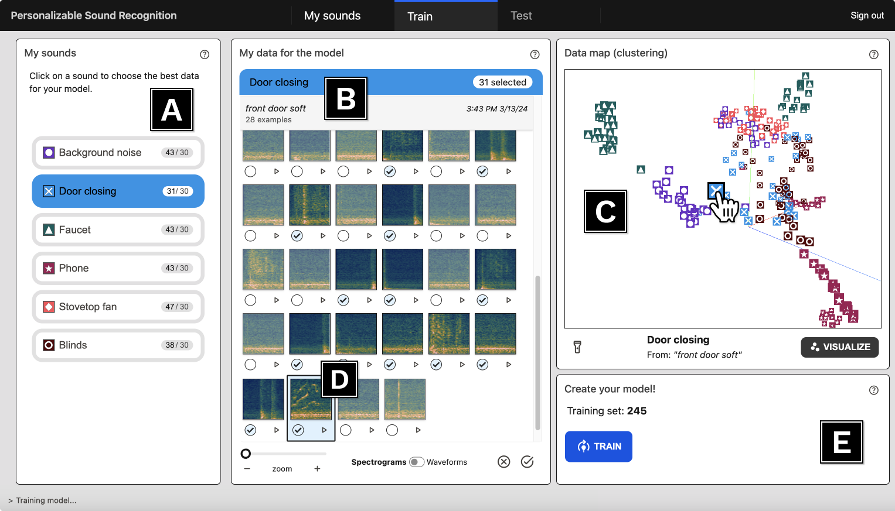
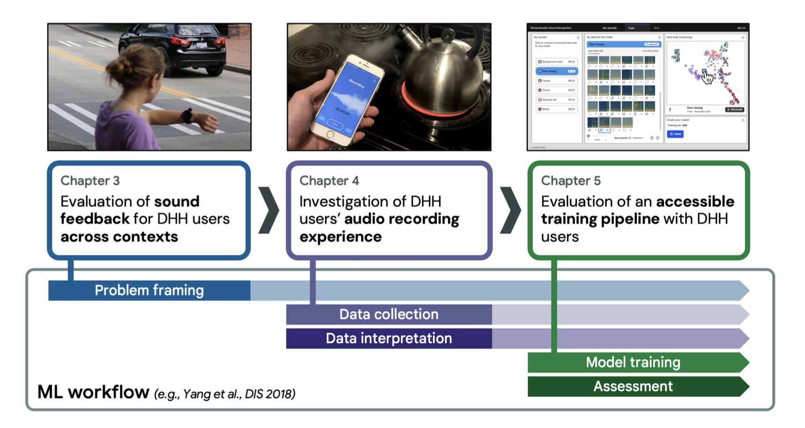

About Me
Hello! I am a recent Ph.D. graduate from the department of Human Centered Design & Engineering at the University of Washington, specializing in accessibility technologies and human-centered AI. My dissertation explored interactive machine learning tools for Deaf, deaf, or hard of hearing users to personalize their own sound recognition models, resulting in several publications at top HCI venues (CHI, ASSETS, IMWUT). Previously, at Google Research, I led the design and evaluation of an AI support tool for writers with dyslexia using large language models, and at NASA and the University of Minnesota, I supported the development of novel wearable systems.
I am currently on the job market and seeking industry roles where I can leverage my user research expertise to build inclusive, impactful technologies. I bring expertise in user research (study design, interviewing, usability testing), rapid prototyping (web applications, wearables), and translating findings into actionable product guidance (experience in academic, industry, and government contexts). I am passionate about all issues at the intersection of AI and accessibility, including AI to assist users with disabilities; AI fairness; end-user agency and trust in AI systems; and privacy and data protection.
Please refer to my Curriculum Vitae for a complete overview of my experience and history, or reach out if you’d like to learn more!
Last updated: January 2025
Selected Publications
- ACM CHI 2025SPECTRA: Personalizable Sound Recognition for Deaf and Hard of Hearing Users Through Interactive Machine Learning( To appear )
- Doctoral Dissertation, University of Washington | 2024
- ACM ASSETS 2022 Best Paper Nominee

- PACMHCI CSCW 2021 Honorable Mention
- ACM ASSETS 2020 Best Artifact Award
- ACM ASSETS 2020 Poster
- ACM ISWC 2020
- ACM CHI 2019 Extended Abstracts


Talks & Videos
- April 18, 2023

Human-Centered Sound Recognition Tools
Public proposal at the University of Washington | Slides - October 25, 2022
LaMPost: AI-assisted Writing for Dyslexia
ASSETS 2022 in Athens, Greece | Slides - September 22, 2021
Toward User-Driven Sound Recognizer Personalization
Virtual event for paper at UbiComp 2021 | Slides - November 22, 2019

Smartwatch Sound Feedback Across Contexts
University of Washington (in anticipation of CHI 2020 paper) | Slides - May 5, 2019

Social Tensions with HMDs for Accessibility
Social HMDs workshop at CHI 2019 in Glasgow, Scotland | Slides
Videos
-
ProtoSound: Personalized, Scalable Sound Awareness
April 3, 2022Produced video in support of co-authored work at CHI 2022. -
HoloSound: AR Sound Awareness
July 31, 2020Produced video in support a co-authored poster at ASSETS 2020.